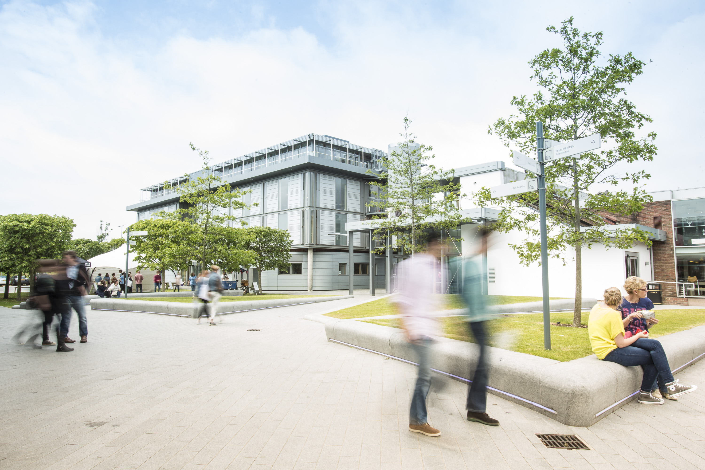

Why our University is the right place for you?
The University provides modern knowledge in Computer Science and Business, soft skills courses along with summer internships and 98% employment after the graduation (according to statistics of the last 5 years). Also we encourage our students to take responsibility, organise events and create their own products.
Student experience
The Fictum University of St. Arman offers a student experience like no other. We are committed to providing students with every opportunity to go above and beyond and reach their potential – professionally, academically and socially. Students have access to a truly global experience, where they are taught by academics from across the world. They can study abroad or complete an overseas placement, and have numerous opportunities to learn new languages.

Our campus
Our modern campus of st.Arman is not only the place where you are going to live and sleep. It is a big community that provides you with great opportunities. Every student can find friends here, join charity organizations and develop soft skills that way. Campus and collegium are situated in the green zone so every student can study or spend their time in the open air. Every student can compete for the scholarship to live in the Campus for free.
History
Fictum university of Saint Arman was found in 1885 by St. Arman Romaniutskyi in Amsterdam. In 1906-1934 it was one of the best universities in Europe. Students from all over the world wanted to study there and soon it became one of the world’s largest economic science centers. During the world war 2, it was nearly wrecked by natsis soldiers. After the reconstruction of the building in 1996 The best professors of netherlands decided to renovate the Fictum university of Saint Arman and make it great again.
Why our University is the right place for you?
Fictum university of Saint Arman offers you education in two spheres: economics and IT. On both these faculties you can enjoy lectures led by highly qualified professors. They will teach you from the basic programming and economics to the advanced level. We promise that they will not allow you to relax from the beginning of the year till the very end. We want our students to use all the resources they have. That is why we provide you with various activities, which you will be able to take during your spare time. They include different clubs and meetings with famous and successful people, so you can enrich your knowledge and learn from real experts in their field all the time.
How to apply
- Fill in the application form.
- If we consider your application form as acceptable you will receive an e-mail in 5 days with an invitation to participate in the second tour. Get ready to show your skills in Computer Science or Economics in accordance to the course you chose.
- If you pass the second tour successfully, you will be invited to the interview with our professors.
- Then, if you are successful in any of the points above, the e-mail with the list of documents required for applying will be sent to you till 30th of July.